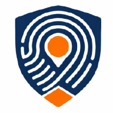

Gesture-Based Trigger
Users can activate an emergency alert with a triple-tap of the power button or a vigorous shake, even when speed and silence are critical.

SafeTap Get AppBuilt for discreet emergency response in Nigeria
SafeTap is a discreet emergency alert system designed to help commuters, students, and residents silently trigger distress signals during kidnapping or security threats. With a triple-tap or shake, the app can alert Guardians, share live GPS location, and activate evidence capture in seconds.
Emergency Triggered
Guardians notified instantlyCore experience
The product brief positions SafeTap as a silent lifeline for people facing kidnapping and insecurity. This page now presents the app around that core mission, audience, and emergency workflow.
Users can activate an emergency alert with a triple-tap of the power button or a vigorous shake, even when speed and silence are critical.
The experience is framed around discreet use, including a hidden or harmless-looking interface so the app can stay unnoticed during an active threat.
SafeTap can broadcast live GPS location to Guardians and capture audio evidence, helping trusted responders act faster and with better context.
Why SafeTap matters
The brief makes one thing clear: traditional emergency calling often fails when a victim cannot speak, unlock a phone, or safely open an app. SafeTap is presented here as a tool built for that exact reality.
Ready to share
Share the MVP with early users, mentors, security partners, and pilot communities using a landing page that now reflects the actual brief behind the product.
{kind=link}